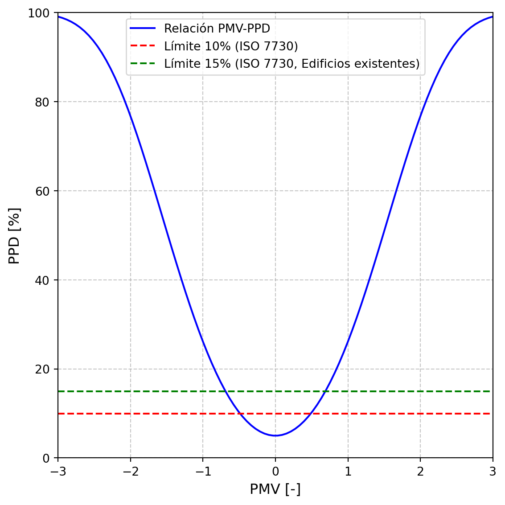

2 Antecedentes y marco teórico
2.1 Confort térmico
El confort térmico es un concepto subjetivo, ya que depende de las percepciones individuales y está influenciado por factores ambientales y personales. La sociedad estadounidense de ingenieros de calefacción, refrigeración y aire acondicionado (ASHRAE, por sus siglas en inglés) lo define como la condición mental que expresa satisfacción con el ambiente térmico (ASHRAE55 2017), mientras que la organización internacional de normalización (ISO, por sus siglas en inglés) en su norma 7730 lo describe como la sensación de bienestar térmico que experimenta una persona en un entorno dado, considerando aspectos físicos, fisiológicos y psicológicos (2005). Podemos decir entonces que el confort térmico es la sensación de satisfacción o insatisfacción con el ambiente térmico y está influenciado por percepciones individuales y como los individuos reaccionan ante las condiciones térmicas de su entorno.
El confort térmico es más complejo que un simple estado de satisfacción o insatisfacción, se puede considerar un rango de sensaciones que van desde una percepción extrema de frío hasta una sensación de extremo calor. En este sentido, se puede considerar como un equilibrio térmico entre el cuerpo humano y su entorno, donde la temperatura corporal se regula a través de procesos fisiológicos, como la sudoración, la vasoconstricción y la vasodilatación (Sakoi et al. 2023). Además, el confort térmico no solo depende de las condiciones ambientales, sino también de cómo los individuos interpretan estas condiciones según sus experiencias y expectativas personales (ASHRAE55 2017).
Los factores que afectan la sensación de confort térmico se pueden agrupar en dos categorías principales: factores ambientales y factores personales.
Factores ambientales
Los factores ambientales incluyen la temperatura del aire, la temperatura radiante media, la velocidad del aire, la humedad relativa, y la presión atmosférica (ASHRAE55 2017). Estos factores son fundamentales para evaluar el entorno y diseñar estrategias que mejoren el confort térmico, ya que afectan directamente la capacidad del cuerpo para mantener un equilibrio térmico adecuado.
Temperatura del aire: Influye en la sensación de calor o frío percibida a través de la piel. Para S. Y. Sim et al. (2016), Choi y Yeom (2017) y Liu et al. (2019), la temperatura ambiente es uno de los principales factores que afecta al confort térmico.
Temperatura radiante media: Es la temperatura uniforme de un entorno imaginario en el cual el intercambio de calor radiante entre una persona y las superficies circundantes sería igual al intercambio de calor radiante real en el entorno actual (ASHRAE 2009). O bien lo podemos definir como la temperatura promedio de las superficies que rodean a una persona. Las superficies realizan un intercambio de calor con el cuerpo humano, afectando la sensación de frío o calor. Este factor es crucial en el diseño de edificaciones, donde la elección de materiales influye directamente en la transferencia de calor.
Velocidad del aire: Juega un papel importante en la sensación de frescura o calor. El flujo de aire sobre la piel humana favorece la evaporación del sudor, lo cual genera un efecto refrescante. Según estudios, la velocidad adecuada del aire mejora significativamente los niveles de confort térmico, el rendimiento cognitivo y la satisfacción general (Cen, Cheng, y Wong 2023).
Humedad relativa: Afecta la capacidad del cuerpo humano para disipar el calor a través de la sudoración. En ambientes muy húmedos, la evaporación del sudor se ve disminuida, generando una mayor sensación de calor, mientras que en ambientes secos la sudoración se acelera, aumentando la sensación de frescura.
Presión atmosférica: La presión atmosférica también puede influir en la percepción del confort térmico, especialmente en entornos de gran altitud, donde la menor densidad del aire afecta a la respiración.
Factores personales
Los factores personales incluyen la actividad física, la vestimenta, la edad, el sexo y aspectos culturales y socioeconómicos.
Actividad física: Influye directamente en la producción de calor del cuerpo. Una persona que realiza una actividad física intensa produce más calor que una persona en reposo. En el contexto de confort térmico, la producción de calor se mide en unidades de “met”, donde 1 met equivale a la producción de calor de una persona en reposo, aproximadamente 58.2 W/m² (ASHRAE 2009).
Vestimenta: Actúa como un aislante térmico que ayuda a retener el calor en el cuerpo. El nivel de aislamiento térmico de la ropa se mide en unidades de “clo”. El valor de 1 clo equivale al aislamiento proporcionado por un traje típico de negocios, aproximadamente 0.155 m²·K/W (ASHRAE 2009).
Edad: La edad afecta la percepción del confort térmico debido a cambios fisiológicos asociados con el envejecimiento, que reducen la capacidad de termorregulación (Larriva y García 2019).
Sexo: El sexo también influye en la percepción del confort térmico. J. Lyu et al. (2023) demuestra que las mujeres tienden a soportar temperaturas más cálidas en comparación con los hombres. Chaudhuri et al. (2018) y Choi y Yeom (2017) también mencionan que el confort térmico está influenciado por el sexo del individuo.
Factores culturales y socioeconómicos: Las expectativas sobre un ambiente térmicamente confortable varían según la cultura. Además, el estatus socioeconómico puede afectar las preferencias térmicas debido al acceso desigual a recursos como sistemas de aire acondicionado y calefacción K. J. Lyu et al. (2023).
2.2 Evaluación de confort térmico a través de encuestas
A pesar de que el confort térmico es un termino subjetivo, este se puede evaluar a través de encuestas de confort térmico. Para ello, la ISO en su norma 10551 (2019) establece escalas de juicio subjetivo para evaluar el entorno físico, con el objetivo de garantizar que los espacios sean diseñados teniendo en cuenta al usuario. La norma aborda cinco tipos principales de escalas, divididos en dos categorías: escalas para el estado personal y escalas para describir el entorno físico. Las escalas para el estado personal son tres: perceptual, evaluativa y percepción. Mientras que para el entorno físico son dos: aceptabilidad y satisfacción.
Aguirre (2021) presenta las escalas de la siguiente manera:
2.2.1 Escalas para el estado personal
Escala de percepción del estado personal (¿Cómo te sientes ahora?): Se utiliza para comprender la percepción subjetiva del estado personal de un individuo en un entorno específico. La escala puede ser unipolar o bipolar. En el caso de la escala unipolar, se utiliza una graduación de cuatro grados, que puede extenderse a cinco de ser necesario. El punto de origen se establece en 0, que representa un estado neutro, mientras que los grados de intensidad se enumeran como 1, 2, 3 y opcionalmente 4. Por otra parte, si la escala es bipolar, se utiliza una graduación de siete grados, que puede ampliarse hasta nueve de ser necesario. El punto de indiferencia también es 0, pero esta escala se divide en dos polos opuestos: el polo A y el polo B. Los grados negativos de intensidad van de -1 a -3 y -4 opcionalmente, siendo -4 el más cercano al polo A y -1 el más cercano a 0. Los grados positivos de intensidad van de 1 a 3 y 4 opcionalmente, siendo 4 el más cercano al polo B y 1 el más cercano a 0. El 0 representa la ausencia de sensación en ambas escalas.
Escala evaluativa (¿Cómo te encuentras?): Se utiliza para medir el nivel de comodidad en un entorno. Es una escala unipolar de cuatro grados ampliable a cinco. El 0 representa comodidad y el polo representa la incomodidad extrema.
Escala de preferencia (¿Cómo preferirías estar?): Utiliza una escala bipolar simétrica con siete grados para medir la preferencia de las personas respecto a ciertos aspectos del entorno. El 0 representa “sin cambio” en la preferencia.
2.2.2 Escalas para describir el entorno físico
Aceptabilidad: Esta escala se centra en la aceptabilidad a nivel personal del entorno. Tiene dos grados, se acepta o se rechaza.
Satisfacción: Se centra en la tolerancia al entorno. Es una escala de cinco grados. 0 es perfectamente tolerable, mientras que el polo es intolerable.
En la Tabla 2.1 se observa la estructura para la escala unipolar.
| Punto de origen | Grados de intensidad | |
|---|---|---|
| 0 | 1,2,3,(4) | Unipolar |
En la Tabla 2.2 se oberva la estructura para la escala bipolar.
| Grados de intensidad | Punto de indiferencia | Grados de intensidad | ||
|---|---|---|---|---|
| Polo A | (-4),-3,-2,-1 | 0 | 1,2,3,(4) | Polo B |
2.3 Modelos de confort térmico
Además de las encuestas utilizadas para evaluar el confort térmico, se han desarrollado modelos diseñados específicamente para predecirlo. Estos modelos se adaptan a condiciones especificas y pueden dividirse en dos categorías: los modelos para edificaciones con sistemas de aire acondicionado y los modelos para edificaciones sin aire acondicionado.
2.3.1 Modelos para edificaciones con sistemas de aire acondicionado
PMV-PPD
El voto medio previsto (PMV, por sus siglas en inglés) está en función de las siete variables físicas que afectan al confort térmico: temperatura del aire, temperatura radiante, humedad relativa, velocidad del aire, presión atmosférica, nivel metabólico del ocupante y nivel de aislamiento térmico de la ropa. Dispone de una escala bipolar de sensación térmica de siete puntos, donde -3 indica una sensación de mucho frío, 0 representa una sensación neutra y +3 representa una sensación de mucho calor. Este es un modelo pensado para edificaciones que cuenten con sistemas de aire acondicionado y fue desarrollado por Fanger (1970).
Las ecuaciones para calcular el PMV son:
\[ \text{PMV} = \left[ 0.303 \cdot \exp(-0.036 \cdot M) + 0.028 \right] \cdot \Bigg\{ (M - W) - 3.05 \times 10^{-3} \cdot \big[ 5733 - 6.99 \cdot (M - W) - P_a \big] - 0.42 \cdot \big[ (M - W) - 58.15 \big] - 1.7 \times 10^{-5} \cdot M \cdot (5867 - P_a) - 0.0014 \cdot M \cdot (34 - t_a) - 3.96 \times 10^{-8} \cdot f_{cl} \cdot \big[ (t_{cl} + 273)^4 - (t_r + 273)^4 \big] - f_{cl} \cdot h_c \cdot (t_{cl} - t_a) \Bigg\}. \tag{2.1}\]
\[ t_{cl} = 35.7 - 0.028 \cdot (M - W) - I_{cl} \cdot \Bigg\{ 3.96 \times 10^{-8} \cdot f_{cl} \cdot \big[(t_{cl} + 273)^4 - (\bar{t}_r + 273)^4\big] + f_{cl} \cdot h_c \cdot (t_{cl} - t_a) \Bigg\} \tag{2.2}\]
\[ h_c = \begin{cases} {2.38 \cdot |t_{cl} - t_a|^{0.25}} & \text{si } 2.38 \cdot |t_{cl} - t_a|^{0.25} > 12.1 \cdot \sqrt{v_{ar}} \\ 12.1 \cdot \sqrt{v_{ar}} & \text{si } 2.38 \cdot |t_{cl} - t_a|^{0.25} < 12.1 \cdot \sqrt{v_{ar}} \end{cases} \tag{2.3}\]
\[ f_{cl} = \begin{cases} 1.00 + 1.290 \cdot I_{cl} & \text{si } I_{cl} \leq 0.078 \\ 1.00 + 0.645 \cdot I_{cl} & \text{si } I_{cl} > 0.078 \end{cases} \tag{2.4}\]
\[ v_{ar} = v_{air} + 0.3 \cdot (M - 1) \tag{2.5}\]
donde:
\(M\) : Tasa metabólica (\(W/m^2\))
\(W\) : Trabajo mecánico externo (\(W/m^2\))
\(I_{cl}\) : Aislamiento térmico de la ropa (\(m^2 \cdot °C/W\))
\(f_{cl}\) : Factor de cobertura de la ropa (sin unidad)
\(t_a\) : Temperatura del aire (°C)
\(\bar{t}_r\) : Temperatura media radiante (°C)
\(p_a\) : Presión parcial del vapor de agua (Pa)
\(v_{ar}\) : Velocidad relativa del aire (m/s)
\(v_{air}\) : Velocidad del aire (m/s)
\(h_c\) : Coeficiente de transferencia de calor por convección (\(W/m^2 \cdot °C\))
\(t_{cl}\) : Temperatura de la superficie de la ropa (°C)
\(HR\) : Humedad relativa (%)
El Porcentaje Previsto de Insatisfacción (\(PPD\), por sus siglas en inglés) es un modelo que predice el porcentaje de personas que se sentirán insatisfechas con las condiciones térmicas en un ambiente determinado. Este modelo está relacionado con el PMV y fue propuesto por Fanger (1970). La ecuación que lo define se expresa de la siguiente manera:
\[ PPD = 100 - 95 \cdot \exp\left(-0.03353 \cdot \text{PMV}^4 - 0.2179 \cdot \text{PMV}^2\right) \tag{2.6}\]
ASHRAE 55 (2017) indica que el \(PPD\) no debe ser mayor al 10% en todos los edificios, mientras que la ISO 7730 (2005) indica un valor menor al 10% para edificios nuevos y 15% para edificios ya existentes. En la Figura 2.1 observamos la relación entre el PMV y el PPD.
2.3.2 Modelos para edificaciones sin sistemas de aire acondicionado
Existen modelos pensados para aplicarse en edificaciones sin sistemas de aire acondicionado. Existen dos tipos: adaptativos y no adaptativos.
Adaptativos
ePMV
El voto medio previsto extendido (ePMV, por sus siglas en inglés) es una modificación al PMV. Se observó que el PMV sobrestima el voto de sensación térmica de las personas en edificios sin aire acondicionado ubicados en climas cálidos. Para corregir esto, se introdujo un factor de expectativa (e), el cual ajusta los cálculos del PMV teniendo en cuenta factores como la duración del clima cálido a lo largo del año y la frecuencia con que las personas ingresan a otros edificios en la región que cuentan con sistemas de aire acondicionado (Fanger y Toftum 2002).
En la Tabla 2.3 se presentan los valores del factor e para diferentes escenarios.
| Período cálido | Edificios cercanos con aire acondicionado | Valor (e) |
|---|---|---|
| Todo el año | No | 0.5 |
| Todo el año | Sí | 0.7 |
| Verano | No | 0.7-0.8 |
| Verano | Sí | 0.8-0.9 |
| Período corto en verano | - | 0.9-1 |
Para el calculo del ePMV además de calcular el valor de e, se debe considerar el valor del estado metabólico del ocupante (MET). usualmente el MET se determina mediante tablas estandarizadas que asignan valores a diferentes actividades. Sin embargo, esto no considera el comportamiento natural de las personas que al sentir calor tienden a reducir su actividad de manera inconsciente para adaptarse al clima, disminuyendo así su tasa metabólica. La solución propuesta para el ePMV es considerar esta reducción en la tasa metabólica en ambientes cálidos. Se considera una disminución del 6.7%.
De esta manera, para calcular el ePMV se deben seguir los siguientes pasos:
- Calcular el PMV
- Se calcula la nueva tasa metabólica de la siguiente manera: \[ M_{mod} = M \cdot (1 -0.067 \cdot PMV) \tag{2.7}\]
Donde \(M_{mod}\) es la tasa metabólica modificada y \(M\) es la tasa metabólica estimada para el PMV.
- Se vuelve a obtener el valor del PMV utilizando \(M_{mod}\)
- Se multiplica el nuevo valor del PMV por el factor e
aPMV
El voto medio previsto adaptativo (aPMV, por sus siglas en inglés), es una adaptación del PMV y fue propuesta por Yao, Li, y Liu (2009). Es un modelo que toma en cuenta la sobrestimación del PMV de los ocupantes en edificios sin aire acondicionado. Se propone un coeficiente adaptativo \(\lambda\), el cual se obtiene realizando encuestas de sensación térmica a los ocupantes del edificio, y en caso de que el edificio aún se encuentre en construcción, se busca un edificio con características similares. El aPMV se calcula de la siguiente manera:
\[ \text{aPMV} = \frac{\text{PMV}}{1 + \lambda \text{PMV}} \tag{2.8}\]
No adaptativos
Índice Humidex Ontario
Propuesto por Masterton, Richardson, y atmosphérique (1979). Representa en un solo valor cómo la temperatura y la humedad del aire afectan la sensación térmica. Utiliza datos recopilados en una encuesta a una muestra representativa de personas. Es un modelo exclusivo para climas cálidos. Se calcula de la siguiente manera:
\[ Humidex = T + h \tag{2.9}\] \[ h = \frac{5}{9}(p_v- 10) \tag{2.10}\]
donde:
\(T\) : Temperatura de bulbo seco (°C)
\(h\) : Factor de humedad (°C)
\(p_v\) : Presión de vapor (mbar)
Índice Humidex Colima
El Índice Humidex Colima adapta la fórmula original del Índice Humidex Ontario Ecuación 2.9 para responder a las condiciones climáticas de la región de Colima, México. A diferencia del índice original, que está diseñado exclusivamente para climas cálidos, este nuevo índice considera la época de frío. Este índice se basa en encuestas de confort realizadas en la ciudad de Colima. Estas encuestas se llevaron a cabo en diferentes estaciones del año (Gómez-Azpetia, Gómez, y Peña 2006).
2.4 Variables fisiológicas como indicadores de confort térmico
Si bien existen distintos modelos que permiten predecir el confort térmico, estos no son 100% precisos, por ello se han buscado otras formas de poder medir y predecir el confort térmico. Se ha visto que existen variables fisiológicas que pueden estar fuertemente relacionadas a la sensación de confort térmico del ser humano.
Las variables fisiológicas que están relacionadas con la respuesta del cuerpo humano a las condiciones ambientales e incluyen la tasa de sudoración, la temperatura de la piel y la frecuencia cardíaca (Bogatu et al. 2023). La medición de estas variables permite identificar cómo una persona está reaccionando a las condiciones térmicas y si se encuentra en un estado de confort. J. K. Sim, Yoon, y Cho (2018) midieron la tasa de sudoración a través de una cámara de humedad y mencionaron que el estado térmico puede ser medido a través del sudor. Sin embargo, Bogatu et al. (2023) señala que la sudoración no siempre es un indicador fiable del confort térmico debido a que la sudoración se puede ver afectada por factores emocionales o estrés. Además de que en ambientes fríos la poca sudoración de la piel dificulta la medición de esta variable. S. Y. Sim et al. (2016) llevaron a cabo un estudio donde midieron la temperatura de la piel en cuatro puntos distintos: parte superior de la muñeca, arteria radial, arteria ulnar y la punta del dedo índice. Los resultados mostraron que combinar las tres mediciones de la muñeca proporciona los mejores resultados, con una correlación de Pearson de 0.81 respecto al voto de sensación térmica (TSV, por sus siglas en inglés). Sin embargo, las mediciones individuales de la parte superior de la muñeca y de la arteria radial también ofrecieron resultados satisfactorios, con una correlación de Pearson de 0.76. De manera similar, Choi y Yeom (2017) realizaron un estudio en donde a través de un algoritmo de árbol de decisiones crearon modelos para predecir el TSV midiendo la temperatura en diferentes puntos del cuerpo: frente, cuello, espalda, brazo, muñeca (interior), muñeca (posterior), pecho, cintura, vientre. En donde el mejor resultado lo obtuvieron al hacer un modelo combinando las mediciones de la cintura, brazo y la parte interior de la muñeca, con un 95.87% de precisión.
Bogatu et al. (2023) también concluyeron que la temperatura de la piel es un buen indicador de confort térmico debido a su facilidad de medición, ya que representa el medio de interacción entre el cuerpo humano y su entorno, regulando el intercambio de calor mediante procesos como la vasodilatación y la vasoconstricción. Identificaron que a temperaturas más altas en la piel se registra una mayor tendencia a una sensación de calor, mientras que temperaturas más bajas de la piel se relacionan con una sensación de frío. Además, identificaron la frecuencia cardíaca y la variabilidad de la frecuencia cardíaca (VFC) como buenos indicadores del confort térmico. La VFC está vinculada al estado de homeostasis del cuerpo y puede reflejar el nivel de confort térmico de una persona, con estudios que muestran variaciones de HRV según el entorno térmico y una precisión del 93.7% al predecir el estado térmico de un individuo utilizando algoritmos de clasificación de aprendizaje automático. De hecho, el estudio de Nkurikiyeyezu, Suzuki, y Lopez (2017) refuerza esta idea, mostrando que la VFC puede predecir el estado de confort térmico en diferentes condiciones ambientales. En su estudio, se analizaron índices de la VFC de individuos realizando tareas en ambientes fríos, neutros y cálidos, logrando predecir el estado térmico con una precisión de hasta el 93.7%.
2.5 Modelos de confort térmico en México
La mayoría de los modelos de confort térmico que se han desarrollado son para países europeos o Estados Unidos, en donde sus condiciones climáticas difieren de las condiciones climáticas de México (en donde se desarrolla este proyecto). Estos modelos y las investigaciones en confort térmico han servido como base para definir parámetros de confort térmico, sin embargo no siempre se adaptan a las diferentes condiciones climáticas. México es un país con una gran variedad de regiones bioclimáticas, desde regiones áridas, hasta regiones tropicales húmedas (Fondo Nacional de la Vivienda para los Trabajadores (Infonavit) 2020), lo cual requiere estudios específicos de confort térmico para cada una de estas regiones. Al día de hoy se han hecho diversos estudios en las diferentes regiones bioclimáticas del país. A continuación se presentan algunos de esos estudios llevados a cabo en México.
Rincón-Martínez y Int (2019) llevaron a cabo experimentos para evaluar el confort térmico en una cámara de ambiente controlado y estudios de campo en la Universidad Autónoma Metropolitana (UAM) ubicada en la delegación Iztapalapa de la Ciudad de México, la cual cuenta con un clima templado húmedo, con la finalidad de comparar los resultados entre las condiciones del laboratorio con los estudios de campo. Los resultados mostraron una alta concordancia entre ambos escenarios, lo que sugiere que las condiciones de laboratorio pueden simular adecuadamente las condiciones de confort térmico bajo escenarios reales. Martínez et al. (2020), por su parte, desarrolló un modelo matemático adaptativo para estimar el confort térmico en edificios educativos naturalmente ventilados de Ensenada, Baja California, una región con un bioclima templado seco. Desarrollaron un modelo matemático en función de la temperatura operativa: \(𝑦 = 0.2159𝑥− 1.1115\), donde \(𝑦\) representa la sensación térmica y \(𝑥\) la temperatura operativa. Oropeza-Perez, Petzold-Rodriguez, y Bonilla-Lopez (2017) desarrollaron un modelo adaptativo de confort térmico para cuatro principales regiones climáticas de México (clima árido, clima tropical seco, clima templado y clima tropical húmedo), analizaron edificios con y sin sistemas de aire acondicionado. Demostraron que el uso de estrategias pasivas, como la ventilación natural y el control solar, pueden mejorar el confort térmico en una edificación y reducir con ello la dependencia de sistema mecánicos de climatización. López-Pérez, Flores-Prieto, y Ríos-Rojas (2019) hicieron algo similar al llevar a cabo un estudio en veinticiete edificaciones educativas en dos modos de operación, con aire acondicionado y con ventilación natural. El Estudio fue realizado durante la temporada cálida en Tuxtla Gutiérrez, Chiapas, en donde hay un bioclima tropical cálido húmedo. Concluyeron que los ocupantes pueden adaptarse a temperaturas interiores más altas que las recomendadas por estándares internacionales, especialmente cuando se implementan estrategias de ventilación natural. Destacando en estos dos estudios la importancia de las estrategias de diseño bioclimático. Finalmente, Zepeda-Gil y Natarajan (2022) investigó el confort térmico en viviendas con ventilación natural en la Meseta Central Mexicana (Ciudad de México y alrededores), con un bioclima templado subhúmedo. El estudio mostró que solo el 42% de las horas de ocupación cumplían con los rangos de confort térmico aceptable, y este porcentaje disminuía significativamente durante el invierno. Los habitantes recurrían a estrategias como el uso de prendas adicionales para mantener el confort. El estudio subraya la importancia de implementar medidas de aislamiento térmico y el diseño de viviendas energéticamente eficientes para garantizar entornos interiores más saludables y reducir la dependencia de estrategias compensatorias ineficientes.
A pesar de los avances logrados en diversos estudios de confort térmico realizados en México, es importante continuar investigando en las distintas regiones bioclimáticas del país. La gran diversidad climática de México requiere soluciones adaptadas a las características específicas de cada región, con el objetivo de garantizar tanto el confort térmico como la eficiencia energética.
2.6 Dispositivos portátiles y tecnologías abiertas en el confort térmico
El uso de dispositivos portátiles ha surgido en años recientes como una valiosa herramienta en la investigación del confort térmico. Dispositivo con la capacidad de recopilar continuamente datos ambientales y fisiológicos ha impulsado el desarrollo de modelos de confort adaptativos, así como un mayor entendimiento general del confort térmico. El avance de la tecnología y el acceso a tecnologías abiertas y de bajo costo ha favorecido la integración de estos dispositivos a los estudios de confort térmico. En este contexto, varios estudios han explorado diversas estrategias para el estudio y modelado del confort térmico con la integración de dispositivos portátiles en el proceso.
Garces et al. (2021) se apoyaron de la tecnología portátil para la estimación del confort térmico a través del modelo PMV-PPD. Crearon un nodo sensor con sensores de temperatura del aire y humedad relativa (DHT22), y un anemómetro de hilo caliente para medir la velocidad del aire y, variables que son clave para la estimación del modelo. El trabajo hecho, demostró la viabilidad de la integración de sistemas de bajo costo con tecnologías libres para la estimación del confort térmico.
En el estudio de J. K. Sim, Yoon, y Cho (2018), se desarrolló un dispositivo portátil diseñado para ser colocado en la muñeca. Este dispositivo tiene un sensor de humedad capacitivo (SY-HC-1) dentro de una cámara de humedad, permitiendo medir de manera continua la tasa de sudoración del usuario. La cámara principal tiene la función de controlar la ventilación natural en el área de la muñeca a través de un actuador termo-neumático que controla la apertura y el cierre de la cámara. El estudio encontró una correlación directa entre el aumento de la tasa de sudoración y el estado de estrés térmico experimentado por el usuario, evidenciando que una mayor tasa de sudoración está asociada con niveles más altos de estrés térmico.
Por otro lado, Cho et al. (2023) desarrollaron un brazalete con tres termistores ubicados en la arteria radial, la arteria cubital y la parte superior de la muñeca, complementado con sensores externos para medir la temperatura del aire y la humedad relativa. Un algoritmo de inteligencia artificial integró estas mediciones con encuestas subjetivas de confort térmico, utilizando escalas como el TSV, para personalizar un modelo predictivo. Este sistema permitió controlar un sistema de calefacción, ventilación y aire acondicionado (HVAC, por sus siglas en inglés).
El proyecto Coolbit, desarrollado por Nazarian et al. (2021), utilizó relojes inteligentes Fitbit equipados con sensores iButton para medir variables como la temperatura del aire, la humedad relativa, la temperatura de la piel, la frecuencia cardíaca y la humedad de la piel. Además, integraron retroalimentación subjetiva mediante encuestas para evaluar la percepción de confort térmico. A través de métodos de regresión, se estableció una correlación entre estas variables y la percepción térmica de los usuarios, permitiendo predecir la temperatura central del cuerpo con un margen de error de ±0.27 °C.
Feng et al. (2023) desarrollaron un sistema portátil capaz de predecir preferencias térmicas individuales. Utilizaron el brazalete Empatica E4, que mide variables fisiológicas como la temperatura de la piel, la frecuencia cardíaca, la conductancia eléctrica de la piel (EDA, por sus siglas en inglés) y la actividad física. También utilizaron el sensor ambiental Ubibot WS1 que mide la temperatura del aire, la humedad relativa y el nivel de luz. Diseñaron una aplicación móvil que se activaba con una alerta en momentos específicos determinados por cambios detectados en los sensores. Estas encuestas incluían escalas de preferencia térmica, sensación térmica y nivel de aislamiento de la ropa. Los datos recopilados se integraron en un modelo de regresión logística multinomial, alcanzando una precisión promedio del 80.3% en la predicción de preferencias térmicas individuales.
Un enfoque diferente fue explorado en el estudio de He et al. (2025), en el cual utilizaron sensores inerciales (IMU, por sus siglas en inglés) para correlacionar actividades humanas con niveles de confort térmico. Los sensores IMU, que combinan acelerómetros, giroscopios y magnetómetros, permiten medir movimientos y orientaciones en tres ejes. En este estudio, se colocaron sensores IMU en las manos de los participantes durante actividades predefinidas a través de encuestas diseñadas para identificar acciones asociadas con estados térmicos de frío, neutro y calor. Estas actividades, como frotarse las manos, abanicarse con las manos, usar el teléfono o abrocharse botones. Los sensores IMU registraron variables como aceleración, velocidad angular y ángulos de Euler, cuyos datos se utilizaron para entrenar modelos de aprendizaje automático. Estos modelos lograron identificar las actividades específicas asociadas con distintos estados de confort térmico. Los autores destacan la viabilidad de estos sensores para aplicaciones en el control de sistemas HVAC.
En el estudio de Tartarini et al. (2022), se utilizó un reloj inteligente Fitbit, dos sensores iButton y la aplicación Cozie para evaluar el confort térmico humano. Cozie, una aplicación diseñada para relojes inteligentes, permitió la recopilación de datos subjetivos mediante encuestas rápidas, además de integrar mediciones de sensores del reloj como la frecuencia cardíaca y la ubicación, aunque actualmente unicamente se encuentra disponible para Apple Watch y algunos modelos de Fitbit. En este estudio se midieron variables como la temperatura de la piel en la muñeca, registrada con un sensor iButton colocado en la parte interna de la correa del reloj; la frecuencia cardíaca, obtenida directamente del Fitbit; la temperatura exterior, derivada de datos climáticos del gobierno de Singapur (lugar donde fue llevado a cabo el estudio); la temperatura del aire cercano al cuerpo, medida por un iButton colocado en la parte externa de la correa; y la temperatura del aire interior y la humedad relativa, registradas mediante sensores adicionales instalados en los espacios interiores de los participantes. A través de Cozie, se realizaron encuestas subjetivas en momentos aleatorios, las cuales incluían preguntas sobre la sensación térmica, la preferencia térmica, el nivel de actividad física y el aislamiento de la ropa. Los datos recopilados sirvieron para desarrollar modelos de regresión multinomial que correlacionaron las variables medidas con las respuestas subjetivas, mientras que algoritmos de aprendizaje automático ayudaron a identificar patrones complejos en los datos, mejorando la precisión de las predicciones. Para evaluar el rendimiento de los modelos, se empleó el F1-score, obteniendo un promedio de 0.78.
Estos estudios demuestran que el uso de dispositivos portátiles en el confort térmico ha revolucionado la manera en que se obtienen datos fisiológicos y ambientales útiles para el estudio del confort térmico. Asimismo, el uso de tecnologías abiertas simplifica su integración al hacerlas más económicas y accesibles. Esto abre las puertas para el desarrollo de nuevos estudios, modelos adaptativos de confort térmico y diversas aplicaciones en esta área.